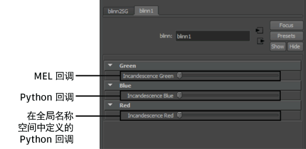

可以在自定义
“属性编辑器”(Attribute Editor)模板中指定视图所使用的属性控件类型。创建自定义模板文件时，可以添加
<description language="cb"> XML 标记，该标记使用回调命令指定自定义属性控件。
提示： 可以使用
“属性编辑器”(Attribute Editor)模板构建器来创建自定义模板和控件。在
http://area.autodesk.com/bonus_tools 中联机下载此 Bonus Tool，或选择
“帮助 > 资源和工具 > 下载 Bonus Tools”(Help > Resources and Tools > Download Bonus Tools)。
下图显示了一个自定义
“属性编辑器”(Attribute Editor)视图，其中包含三个自定义属性控件。每个属性控件均使用不同的回调样式创建。
